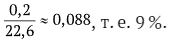

1. Приближенное значение
Пусть дано число x. Число a называется приближенным значением числа х, вычисленным с точностью до h>0, если выполняется неравенство |х-а|< h
Разность |x − a| называют погрешностью, а h — оценкой погрешности приближенного вычисления.
2. Относительная погрешность
Пусть a является приближенным значением величины x, вычисленным с погрешностью h, т. е. пусть |x − a| = h. Отношение погрешности к приближенному значению, т. е. число называется относительной погрешностью вычисления. Так, если среднее расстояние от Земли до Солнца вычислено приближенно как 1,496 · 108 км с погрешностью < 10^5 км, то относительная погрешность такого вычисления будет меньше 0,0007, потому что Часто относительную погрешность (а точнее, оценку для нее) указывают в процентах.
3. Стандартная запись.
Приближенные значения величины часто указывают в так называемой стандартной записи. Положительные числа в стандартной записи представляют в виде: a · 10k, где число a выбирают так, чтобы оно лежало в промежутке [1; 10), т. е. удовлетворяло неравенствам 1 ≤ a < 10, и записывалось десятичной дробью с несколькими знаками после запятой. Число a в стандартной записи x называется мантиссой числа x, а показатель k — его порядком.
Зачем точные значения величины заменяют ее приближенным значением?
Прежде всего потому, что вычислить и записать точное значение величины не удается — всегда при измерении величины можно найти ее значение лишь с некоторой точностью. Кроме того, точная информация бывает излишней — нам часто достаточно знать лишь порядок числа, степень его близости к другим, более просто записываемым числам.
Как можно описать точность вычислений?
1. «Плюс-минус» Нередко говорят так: «Температура равна 16 плюсминус один градус» и записывают: t = (16 ± 1)°С. Это означает, что истинное значение температуры (в градусах Цельсия) отличается от 16 не более чем на единицу. Эту же информацию можно записать в виде неравенства 16 − 1 < t < 16 + 1, или с помощью расстояния: |t − 16| < 1. Здесь 16 — приближенное значение температуры, 1 — оценка погрешности. Относительная погрешность равна
2. «С точностью до…»
Если вы скажете, что площадь комнаты равна 22,6 м2 с точностью до двух десятых квадратного метра, то всем будет ясно, что площадь S лежит в промежутке 22,4 < S < 22,8 м2, или, иначе, что расстояние истинного значения площади до числа 22,6 меньше 0,2, т. е. |S − 22,6| < 0,2 м2. Видим, что этот способ фактически совпадает с первым, и можно с таким же успехом записать: S = 22,6 ± 0,2 м2 и сказать, что площадь вычислена с оценкой погрешности в 0,2 м2, что дает относительную погрешность, равную 
3. «Лежит между»
Фраза «скорость автомобиля лежит между 50 и 60 километрами в час» сразу определяет промежуток, где находится значение скорости v: 50 < v < 60. Можно, конечно, взять середину этого промежутка и перейти к обсуждавшимся ранее способам записи: v = 55 ± 5 (км/ч), |v − 55| < 5 км/ч. Величина 5 км/ч, равная разности (60 − 5) = 5 км/ч, дает оценку погрешности приближенного вычисления скорости, а число т. е. отношение погрешности к приближенному значению, — оценку относительной погрешности